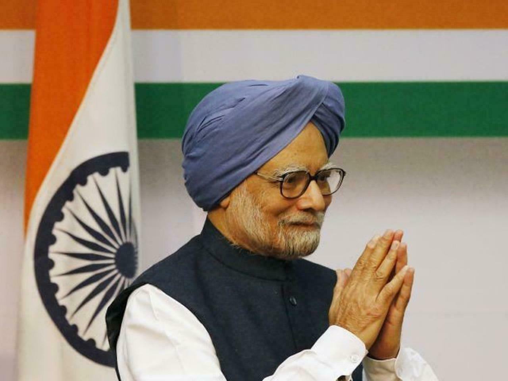

13th Prime Minister of India
Manmohan Singh (born 26 September 1932) is an Indian politician, economist, academician and bureaucrat who served as the 13th Prime Minister of India from 2004 to 2014. He is the third longest-serving prime minister after Jawaharlal Nehru and Indira Gandhi. A member of the Indian National Congress, Singh was the first Sikh and non-Hindu prime minister of India.
